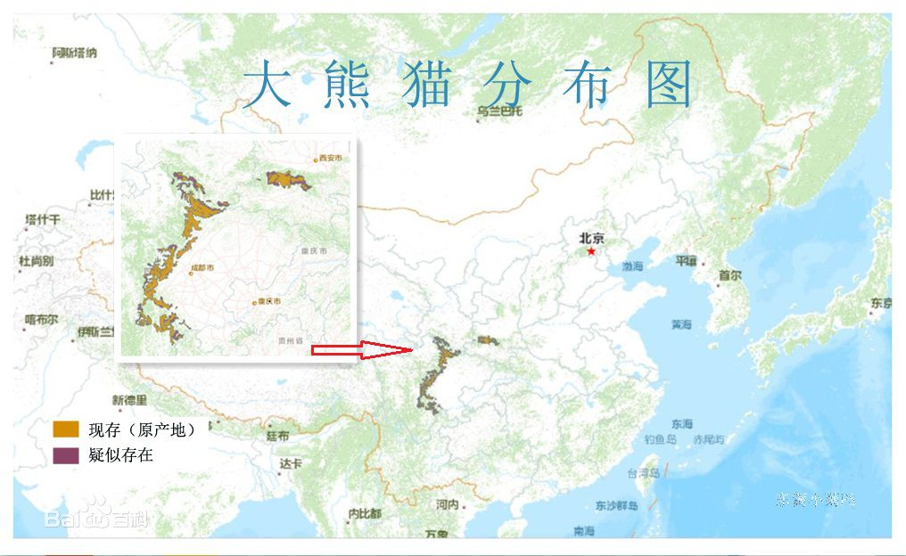
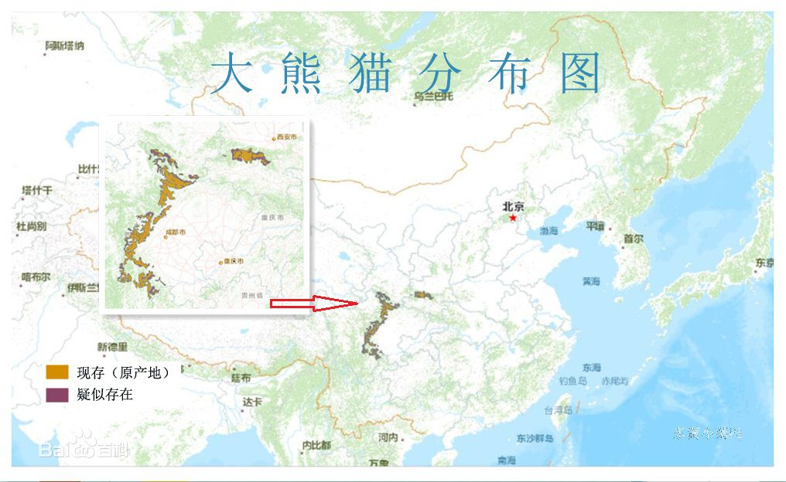
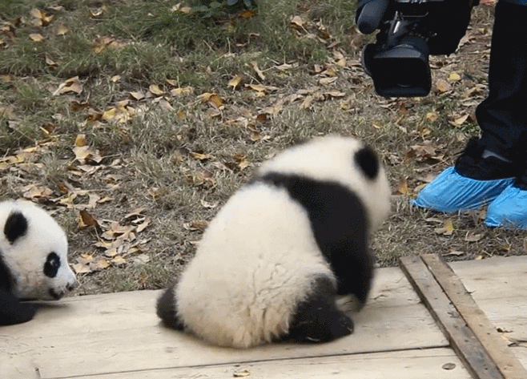

distribution
Distribution in Gansu, Shaanxi, Sichuan (regional extinction: Hubei, Hunan). It includes Qinling, Minshan, Qionglai, Daxiangling, Xiaoxiangling and Liangshan. The Qinling Mountains are mainly distributed in Foping County and Yangxian County. Only a few distribute in Taibai County, Ningshan Zhou Zhi County, Liuba County and Ningqiang County. Minshan system is generally distributed in Sichuan except Wenxian County, Gansu Province. The main distribute counties in Sichuan are Pingwu, Qingchuan and Beichuan. The general distribute counties are Jiuzhaigou, Songpan and Maoxian. A few distribute counties are Anxian, Mianzhu, Pengzhou, Shifang and Dujiangyan. The Qionglai Mountains are mainly distributed in Baoxing, Wenchuan and Tianquan counties, Dayi and Lushan counties in general, and Qionglai, Chongzhou, Kangding and Luding counties in a small number. Except Hongya and Mianning, there are only a few counties in Xiaoxiangling, such as Xingjing, asbestos, Hanyuan and Kowloon. Except for Ma Bian, Meigu and Yuexi, there are only a few counties with Ganluo, Ebian and Leibo.


-

-

- 